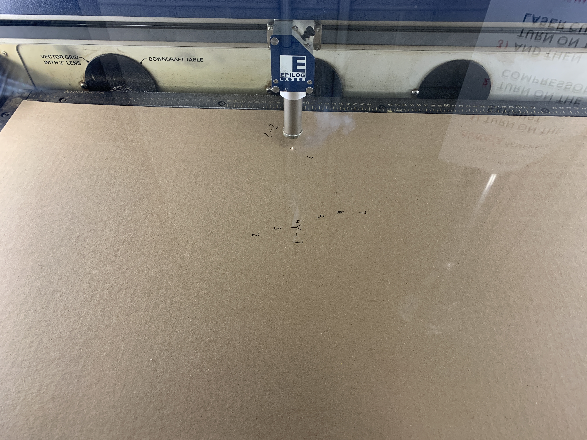

Intro to Digital Fabrication
Amanda Hodgkins
Template by W3.CSS
HOME
×
Week 1: Project Management
Week 2: Laser Cutting
Week 3: Additive Manufacturing
Week 4: CAD, CAM, Plants, and Prusas
Week 5: Subtractive Manufacturing
Week 6: Slicer Mini
Week 7: Slicer Big
Week 8: Vinyl Cutting
Week 9: Electronics 1
☰ PROJECTS
ABOUT
CONTACT
Week 6: Slicer Mini
The assignment for week 6 was to laser cut a 3D cardboard object.
Creating my Object
To start, I went on Tinkercad and looked at the shapes they had. Madison's idea for a table gave me the idea to make a sort of chair. I worked on making a more regular shaped chair and came up with the following.
I decided that I didn't really like how that turned out, so I started over, and found the bean shape.
This gave me the idea of making a sort of beanbag chair! I put the bean on the workspace.
I then worked on editing the shape to get it how I wanted.
This was what I came up with!
Slicer
I saved my file as an stl and opened it in Slicer.
Next, I went through the process of adding my material and formatting it into interlocking slices.
I played around with the orientation of my slices.
Eventually, I came to this setup which had no issues with the slices that were part of it.
I then looked at the assembly plans for how my shape would come together.
Illustrator
I opened all of the plan files from slicer in Illustrator.
After making a canvas that was the size of my cardboard, I nested each part of the design in order to take up the least amount of space. In order to do this, I had to separate some of the elements of the plan files, which I did by copying and pasting them from within the layer to outside of it.
Here are my nested design elements.
I separated the text files for each piece from the layer with the pieces themselves, so they could be cut separately.
I changed the stroke weight, and was ready to cut!
Printing and Assembly
I printed the text layer first, sending it to the Epilog software.
This was cut with lower settings, as we didn;t want it to go through the cardboard itself.

I then hid the text layer, and went to cut the slices themselves.
This went relatively well, although my piece of cardboard was slightly smaller than my canvas, so two slices were slightly cut off.
Here's the finished cut!
I popped out all of my pieces, and went about assembling them following the instructions from Slicer, but found their steps to be confusing, so I just put it together myself once I figured out how the numbers worked.
Here
are my files!!
Contact Me
Name
Email
Message
Send Message
Powered by
w3.css